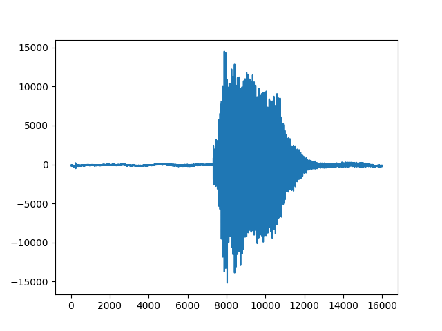
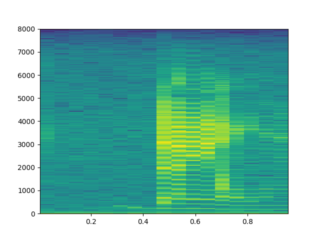
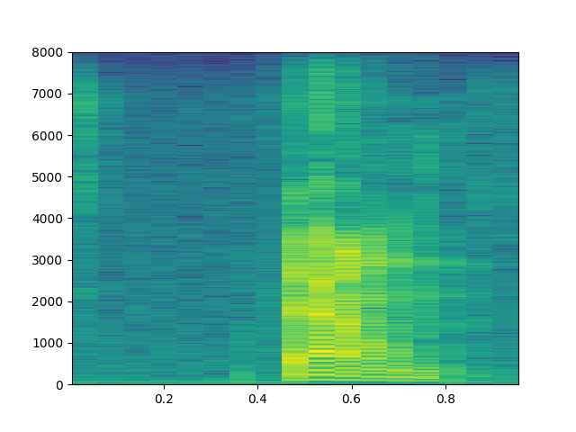
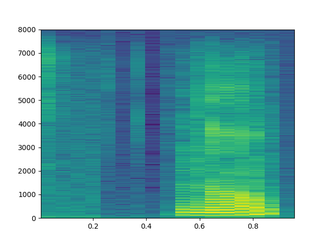
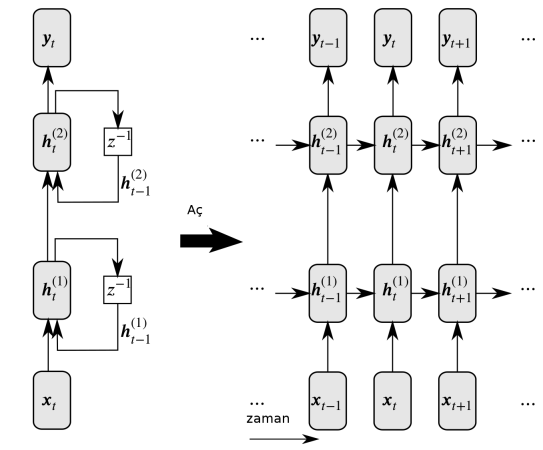

Konuşma Tanıma (Speech Recognition)
Frekans Üzerinden Özellik Çıkartımı, RNN, LSTM, GRU
1 saniyelik ses dosyaları var, bu dosyalardaki ses kayıtları dört farklı komutu içeriyor, İngilizce up, down, yes, no (yukarı, aşağı, evet, hayır) komutları. Ses kayıtları aslında zaman serileridir, tek boyutlu bir veri, mesela 1 saniyelik 16,000 sayı içeren bir vektör. Örnek bir 'down' kaydının neye benzediğini görelim,
import util
import scipy.io.wavfile, zipfile
import io, time, os, random, re
f = util.train_dir + '/down/004ae714_nohash_0.wav'
wav = io.BytesIO(open(f).read())
v = scipy.io.wavfile.read(wav)
print (v[1])
plt.plot(v[1])
plt.savefig('speech_01.png')
train 8537 val 949
[-130 -135 -131 ..., -154 -190 -224]

Yapay öğrenme bağlamında zaman serileri için daha önce [7] yazısında LSTM yapısını görmüştük. Örnek olarak zaman serilerini sınıfladık, zaman serisindeki tüm veriler LSTM'e verilmişti, o zaman bir şeride 150 kusur veri noktası varsa, o kadar LSTM hücresi yaratılacaktı. Fakat içinde binlerce öğe olan seriler için bu iyi olmayabilir. Çözüm seriyi bir şekilde özetleyerek bu daha az olan veriyi LSTM'e vermek. Bu özetlere ses işleme alanında parmak izi (fingerprint) ismi de verilmekte.
Ses verilerini frekans üzerinden özetlemek bilinen bir teknik, ses verisi ufak pencerelere bölünür, bu pencereler üzerinde Fourier transformu işletilir, ve oradaki frekans bilgileri, hangi frekansın ne kadar önemli olduğu elde edilir. Spektogram bu bilgiyi renkli olarak göstermenin bir yolu, üstteki ses için,
plt.specgram(v[1], Fs=util.fs, NFFT=1024)
plt.savefig('speech_02.png')

Spektogramın örüntü tanıma için kullanılabileceğini anlamak için bir tane daha farklı 'down' sesi, bir de 'no' sesinin spektogramına bakalım,
f1 = util.train_dir + '/down/0f3f64d5_nohash_2.wav'
wav1 = io.BytesIO(open(f1).read())
v1 = scipy.io.wavfile.read(wav1)
plt.specgram(v1[1], Fs=util.fs, NFFT=1024)
plt.savefig('speech_03.png')
f2 = util.train_dir + '/no/01bb6a2a_nohash_0.wav'
wav2 = io.BytesIO(open(f2).read())
v2 = scipy.io.wavfile.read(wav2)
plt.specgram(v2[1], Fs=util.fs, NFFT=1024)
plt.savefig('speech_04.png')
 
Görüyoruz ki 'down' seslerinin spektogramları birbirine benziyor. Öğrenme için bu yapıyı kullanabiliriz. Bu arada spektogram "grafiği'' y-ekseninde frekansları, x-ekseni zaman adımları gösterir, grafikleme kodu her zaman penceresindeki belli frekans kuvvetlerinin hangi frekans kutucuğuna düştüğüne bakar ve o kutucukta o kuvvete göre renklendirme yapar. Şimdi bu grafikleme amaçlı, ama bazıları bu grafiğe bakarak "ben çıplak gözle bunu tanıyabiliyorum, o zaman görsel tanımayla üstteki imajla sesi tanıyacak bir DYSA kullanayım'' diye düşünebiliyor. Bu işleyen bir metot, zaten DYSA'nın görsel tanıma tarihi eski, orada bilinen bir sürü teknik var. Her neyse bazıları üstteki görsel spektogram grafiği, yani R,G,B kanallı çıktı üzerinde görsel tanıma yapmayı da seçebiliyor, fakat bu şart değil, bir spektogram, bir veri durumunda iki boyutlu bir matriste gösterilebilir. TensorFlow ile bu hesabı örnek rasgele bir veri üzerinde yapalım,
import tensorflow as tf
init_op = tf.global_variables_initializer()
data = tf.placeholder(tf.float32, [1, 16000])
print (data)
stfts = tf.contrib.signal.stft(data, frame_length=400,
frame_step=100, fft_length=512)
spec = tf.abs(stfts)
print (spec)
s = np.random.rand(1,16000) # rasgele bir zaman serisi uret
with tf.Session() as sess:
sess.run(tf.global_variables_initializer())
res = sess.run(spec, feed_dict={data: s })
print (res)
Tensor("Placeholder_1:0", shape=(1, 16000), dtype=float32)
Tensor("Abs_1:0", shape=(1, 157, 257), dtype=float32)
[[[ 99.39490509 65.10092163 12.84116936 ..., 5.39213753
3.90902305 1.35875702]
[ 100.60041809 66.32343292 12.92744541 ..., 4.64194965
1.80256999 2.0458374 ]
[ 104.70896149 70.13975525 15.93750095 ..., 3.21846962
1.70909929 1.34316254]
...,
[ 97.82588196 63.51060867 11.62135887 ..., 3.23712349
1.94706416 0.41742325]
[ 105.89834595 71.85715485 17.83632851 ..., 4.6476922
2.42140603 1.37829971]
[ 106.46664429 71.12073517 16.69457436 ..., 6.58148479
x 3.24354243 3.80913925]]]
Cok Katmanlı LSTM
LSTM, ya da diğer her RNN çeşidi çok katmanlı olarak kullanılabilir.

Girdiler en alttaki LSTM hücrelerine geçiliyor, bu hücreler birbirlerine konum aktarımı yaptıkları gibi bir sonraki LSTM katmanına girdi de sağlıyorlar, bu aktarım en üst tabakaya kadar gidiyor. Peki o zaman sınıflama amaçlı olarak kullanılan "en son'' hücre hangisi olacaktır? Bunun için tipik olarak katmanlı LSTM'de en üst ve en sondaki hücre kullanılır.
Her hücrede 200 nöron var, o zaman her katman (124,200) boyutunda çünkü spektogramdan 124 zaman boyutu geldi, ve LSTM'in en sondaki hücreden alınan vektör 200 boyutunda olacak, bu çıktı bir tam bağlanmış (fully-connected) katmana verilerek buradan 4 tane etiket için olasılık üretilecek, ve tahmin için kullanılan sonuçlar bunlar olacak. O sayılardan en büyük olanı en olası olan ses komutudur.
Tüm modeli görelim,
# model_lstm.py
import tensorflow as tf, util, os
class Model:
def __init__(self):
self.file = os.path.basename(__file__).replace(".pyc","").replace(".py","")
self.mfile = "/tmp/" + self.file + ".ckpt"
self.batch_size = 100
self.num_epochs = 200
self.dop_param = 0.0 # dropout olasiligi
self.num_layers = 4
self.num_cell = 200
tf.reset_default_graph()
self.dop = tf.placeholder(tf.float32) # dropout olasiligi (probability)
self.data = tf.placeholder(tf.float32, [None, util.fs])
print (self.data)
self.stfts = tf.contrib.signal.stft(self.data, frame_length=256,
frame_step=128, fft_length=256)
print (self.stfts)
self.fingerprint = tf.abs(self.stfts)
print (self.fingerprint)
self.y = tf.placeholder(tf.float32, shape=[None, len(util.labels)])
cells = []
for _ in range(self.num_layers):
cell = tf.contrib.rnn.LSTMCell(self.num_cell)
cell = tf.contrib.rnn.DropoutWrapper(cell, output_keep_prob=1-self.dop)
cells.append(cell)
cell = tf.contrib.rnn.MultiRNNCell(cells)
output, states = tf.nn.dynamic_rnn(cell, self.fingerprint, dtype=tf.float32)
print (output)
for x in states: print (x)
self.last = states[-1][0] # en ust sagdaki son hucre
print (self.last)
self.logits = tf.contrib.layers.fully_connected(inputs=self.last,
num_outputs=len(util.labels),
activation_fn=None)
print (self.logits)
self.softmax = tf.nn.softmax_cross_entropy_with_logits(logits=self.logits,
labels=self.y)
self.cross_entropy = tf.reduce_mean(self.softmax)
self.train_step = tf.train.AdamOptimizer(0.001).minimize(self.cross_entropy)
self.correct_prediction = tf.equal(tf.argmax(self.y,1),
tf.argmax(self.logits,1))
self.evaluation_step = tf.reduce_mean(tf.cast(self.correct_prediction,
tf.float32))
self.saver = tf.train.Saver()
# training 0.91 validation 0.926238
Modelin girdi tensor'un boyutlarını nasıl değiştirdiği altta (üstteki resim iki katman gösterdi, bizim modelde 4 katman var),
import model_lstm
m = model_lstm.Model()
Tensor("Placeholder_1:0", shape=(?, 16000), dtype=float32)
Tensor("stft/rfft:0", shape=(?, 124, 129), dtype=complex64)
Tensor("Abs:0", shape=(?, 124, 129), dtype=float32)
Tensor("rnn/transpose:0", shape=(?, 124, 200), dtype=float32)
LSTMStateTuple(c=<tf.Tensor 'rnn/while/Exit_2:0' shape=(?, 200) dtype=float32>, h=<tf.Tensor 'rnn/while/Exit_3:0' shape=(?, 200) dtype=float32>)
LSTMStateTuple(c=<tf.Tensor 'rnn/while/Exit_4:0' shape=(?, 200) dtype=float32>, h=<tf.Tensor 'rnn/while/Exit_5:0' shape=(?, 200) dtype=float32>)
LSTMStateTuple(c=<tf.Tensor 'rnn/while/Exit_6:0' shape=(?, 200) dtype=float32>, h=<tf.Tensor 'rnn/while/Exit_7:0' shape=(?, 200) dtype=float32>)
LSTMStateTuple(c=<tf.Tensor 'rnn/while/Exit_8:0' shape=(?, 200) dtype=float32>, h=<tf.Tensor 'rnn/while/Exit_9:0' shape=(?, 200) dtype=float32>)
Tensor("rnn/while/Exit_8:0", shape=(?, 200), dtype=float32)
Tensor("fully_connected/BiasAdd:0", shape=(?, 4), dtype=float32)
Eğitim kodu,
import pandas as pd, sys
import numpy as np, util
import tensorflow as tf
import scipy.io.wavfile, zipfile
import io, time, os, random, re
import model_lstm
m = model_lstm.Model()
sess = tf.Session()
sess.run(tf.global_variables_initializer())
saver = tf.train.Saver()
# eger model diskte varsa yukle
print (m.mfile)
print 'model file exists', os.path.isfile(m.mfile + ".index")
if os.path.isfile(m.mfile + ".index"):
print ('restoring')
saver.restore(sess, m.mfile)
train_files, val_files = util.init_files()
for i in range(m.num_epochs):
train_x, train_y = util.get_minibatch(m.batch_size, train_files, val_files)
d = { m.data:train_x, m.y:train_y, m.dop:m.dop_param}
acc, _ = sess.run([m.evaluation_step, m.train_step], feed_dict=d)
print (i, 'accuracy', acc )
if i % 5 == 0:
d = { m.data:train_x, m.y:train_y, m.dop:m.dop_param }
tacc = sess.run(m.evaluation_step, feed_dict=d)
val_x, val_y = util.get_minibatch(m.batch_size,train_files, val_files,validation=True)
d = { m.data:val_x, m.y:val_y, m.dop:0}
vacc = sess.run(m.evaluation_step, feed_dict=d)
print (i, 'training', tacc, 'validation', vacc)
# modeli diske yaz
saver.save(sess, m.mfile)
Eğitim sonrası modelin başarısı eğitim verisi üzerinde yüzde 91, doğrulama verisinde yüzde 92. Kullanılan veri [6]'da.
Dropout
TF ile katmanlararası her noktada dropout kullanılabilir. Dropout ile bir katmandan çıkan ya da ona giren bağlantıların bir kısmı yoksayılır, ve model elde kalanlar ile iş yapmaya uğraşır, aşırı uygunluk problemlerinden böylece kaçınılmış olur. Üstteki kodda hangi olasılıkla dropout yapılacağının olasılığı bir yer tutucu (placeholder) ile TF çizitinin parçası haline getirildi, niye? Böylece son üründeki kullanımda bu parametre 0 yapılarak hiç dropout yapılmaması sağlanabiliyor. Eğitim sırasında bu değer 0.5, 0.2, vs yapılabilir, o zaman dropout devrede olur. Gerçi biz eğitim sırasında da 0 ile eğittik, yani dropout kullanmadık, ama lazım olduğu yerler olabilir, referans açısından burada dursun.
Uygulama
Mikrofondan 1 saniyelik ses parçalarını alıp onu model üzerinde işletip
dört komuttan birini seçen örnek kod mic.py'da
bulunabilir. Performans gerçek zamanlı kullanım için yeterliydi, DYSA ufak
bir şey değil aslında, kaç parametre olduğuna bakalım,
print (util.network_parameters(), 'tane degisken var')
1227204 tane degisken var
1 milyon küsur parametreli bir DYSA , yani potansiyel olarak her saniye en az bir milyon işlem yapılıyor demektir. Görünüşe göre hesap işliyor, TF bazı optimizasyonlar yapmış belki, ve mikroişlemciler yeterince hızlı. Teknoloji güzel şey.
CTC
Ses tanıma için bir diğer yaklaşım optik karakter tanıma yazısında görülen CTC kullanımı [4,5]. Alttaki kodun kullandığı veri [1]'de, yaklaşımın detayları [2]'de görülebilir. Bu ses verisi koca kelimeler, cümleleri içeriyor, çok daha uzun veriler bunlar, ve kayıp fonksiyonu artık basit, belli sayıda komut arasından seçim bazlı değil, büyük bir alfabeden gelen öğelerin yanyana gelişini kontrol ediyor.
from python_speech_features import mfcc
import numpy as np
import tensorflow as tf
from glob import glob
import time, re, os, random
import numpy as np
import librosa
num_epochs = 1000
num_hidden = 100
num_layers = 1
batch_size = 10
num_batches_per_epoch = 10
sample_rate=8000
num_features = 13
# Accounting the 0th index + space + blank label = 28 characters
num_classes = ord('z') - ord('a') + 1 + 1 + 1
print ('num_classes %d' % num_classes)
SPACE_TOKEN = '<space>'
SPACE_INDEX = 0
FIRST_INDEX = ord('a') - 1 # 0 is reserved to space
mfile = "/tmp/speech.ckpt"
def convert_inputs_to_ctc_format(audio, fs, target_text):
#print('convert_inputs_to_ctc_format target_text:' + target_text)
inputs = mfcc(audio, samplerate=fs, numcep=num_features)
# Transform in 3D array
train_inputs = np.asarray(inputs[np.newaxis, :])
train_inputs = (train_inputs - np.mean(train_inputs)) / np.std(train_inputs)
train_seq_len = [train_inputs.shape[1]]
# Get only the words between [a-z] and replace period for none
original = ' '.join(target_text.strip().lower().split(' ')).\
replace('.', '').\
replace('?', '').\
replace(',', '').\
replace("'", '').\
replace('!', '').\
replace('-', '')
#print('original:' + original)
targets = original.replace(' ', ' ')
targets = targets.split(' ')
# Adding blank label
targets = np.hstack([SPACE_TOKEN if x == '' else list(x) for x in targets])
# Transform char into index
targets = np.asarray([SPACE_INDEX if x == SPACE_TOKEN else ord(x) - FIRST_INDEX
for x in targets])
# Creating sparse representation to feed the placeholder
train_targets = sparse_tuple_from([targets])
return train_inputs, train_targets, train_seq_len, original
def sparse_tuple_from(sequences, dtype=np.int32):
indices = []
values = []
for n, seq in enumerate(sequences):
indices.extend(zip([n] * len(seq), range(len(seq))))
values.extend(seq)
indices = np.asarray(indices, dtype=np.int64)
values = np.asarray(values, dtype=dtype)
shape = np.asarray([len(sequences),
np.asarray(indices).max(0)[1] + 1],
dtype=np.int64)
return indices, values, shape
def read_audio_from_filename(filename, sample_rate):
audio, _ = librosa.load(filename, sr=sample_rate, mono=True)
audio = audio.reshape(-1, 1)
return audio
def find_files(directory, pattern='.wav'):
"""Recursively finds all files matching the pattern."""
files = []
for root, directories, filenames in os.walk(directory):
for filename in filenames:
path = os.path.join(root,filename)
if pattern in path: files.append(path)
res = sorted(files)
return res
def run_ctc():
graph = tf.Graph()
with graph.as_default():
# e.g: log filter bank or MFCC features
# Has size [batch_size, max_step_size, num_features], but the
# batch_size and max_step_size can vary along each step
inputs = tf.placeholder(tf.float32, [None, None, num_features])
# Here we use sparse_placeholder that will generate a
# SparseTensor required by ctc_loss op.
targets = tf.sparse_placeholder(tf.int32)
# 1d array of size [batch_size]
seq_len = tf.placeholder(tf.int32, [None])
# Defining the cell
# Can be:
cell = tf.contrib.rnn.LSTMCell(num_hidden, state_is_tuple=True)
# Stacking rnn cells
stack = tf.contrib.rnn.MultiRNNCell([cell] * num_layers,
state_is_tuple=True)
# The second output is the last state and we will no use that
outputs, _ = tf.nn.dynamic_rnn(stack, inputs, seq_len, dtype=tf.float32)
shape = tf.shape(inputs)
batch_s, max_time_steps = shape[0], shape[1]
# Reshaping to apply the same weights over the timesteps
outputs = tf.reshape(outputs, [-1, num_hidden])
# Truncated normal with mean 0 and stdev=0.1
# Tip: Try another initialization
W = tf.Variable(tf.truncated_normal([num_hidden,
num_classes],
stddev=0.1))
# Zero initialization
# Tip: Is tf.zeros_initializer the same?
b = tf.Variable(tf.constant(0., shape=[num_classes]))
# Doing the affine projection
logits = tf.matmul(outputs, W) + b
# Reshaping back to the original shape
logits = tf.reshape(logits, [batch_s, -1, num_classes])
# Time major
logits = tf.transpose(logits, (1, 0, 2))
loss = tf.nn.ctc_loss(targets, logits, seq_len)
cost = tf.reduce_mean(loss)
optimizer = tf.train.MomentumOptimizer(learning_rate=0.005,
momentum=0.9).minimize(cost)
# Option 2: tf.contrib.ctc.ctc_beam_search_decoder
# (it's slower but you'll get better results)
decoded, log_prob = tf.nn.ctc_greedy_decoder(logits, seq_len)
# Inaccuracy: label error rate
ler = tf.reduce_mean(tf.edit_distance(tf.cast(decoded[0], tf.int32),
targets))
files = find_files("/home/burak/Downloads/vctk-p225-small/wav48/p225")
with tf.Session(graph=graph) as session:
tf.global_variables_initializer().run()
saver = tf.train.Saver()
for curr_epoch in range(num_epochs):
train_cost = train_ler = 0
for batch in range(num_batches_per_epoch):
filename = random.choice(files)
txtfile = filename.replace("wav48","txt")
txtfile = txtfile.replace(".wav",".txt")
txt = open(txtfile).read()
audio = read_audio_from_filename(filename, sample_rate)
out = convert_inputs_to_ctc_format(audio,sample_rate,txt)
train_inputs, train_targets, train_seq_len, original = out
feed = {inputs: train_inputs,
targets: train_targets,
seq_len: train_seq_len}
batch_cost, _ = session.run([cost, optimizer], feed)
train_ler += session.run(ler, feed_dict=feed)
print ('batch_cost', batch_cost, 'train_ler', train_ler)
# Decoding
d = session.run(decoded[0], feed_dict=feed)
str_decoded = ''.join([chr(x) for x in np.asarray(d[1]) + FIRST_INDEX])
# Replacing blank label to none
str_decoded = str_decoded.replace(chr(ord('z') + 1), '')
# Replacing space label to space
str_decoded = str_decoded.replace(chr(ord('a') - 1), ' ')
print('Original: %s' % original)
print('Decoded: %s' % str_decoded)
if curr_epoch % 10 == 0: saver.save(session, mfile)
if __name__ == '__main__':
run_ctc()
Kaynaklar
[1] Bayramlı, VCTK Ses Tanima Verisi, Konusmaci 225, https://drive.google.com/uc?export=view&id=1zK-mgG6Q8N8OuOGpexbxVkES3DuQhGOk
[2] Remy, Application of Connectionist Temporal Classification (CTC) for Speech Recognition,https://github.com/philipperemy/tensorflow-ctc-speech-recognition
[3] Graves, Supervised Sequence Labelling with Recurrent Neural Networks, https://www.cs.toronto.edu/~graves/preprint.pdf
[4] Graves, How to build a recognition system (Part 1): CTC Loss, https://docs.google.com/presentation/d/1AyLOecmW1k9cIbfexOT3dwoUU-Uu5UqlJZ0w3cxilkI
[5] Graves, How to build a recognition system (Part 2): CTC Loss, https://docs.google.com/presentation/d/12gYcPft9_4cxk2AD6Z6ZlJNa3wvZCW1ms31nhq51vMk
[6] Bayramlı, Ses Komut Verisi, https://drive.google.com/open?id=1BIGj3NtUZfSrXMaJ8hCqsz0UzS01MSrF
[7] Bayramlı, Bilgisayar Bilim, Uzun Kısa-Vade Hafıza Ağları
Yukarı